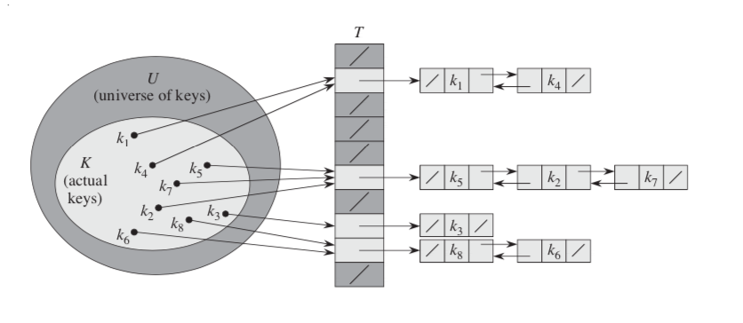

Data Structure - 2020 KNOU
Table of Contents
- 1. Abstract Data Type
- 2. Tree
- 3. Hash
- 4. C language briefing
- 4.1. variable
- 4.2. function
- 4.3. printf
- 4.4. array
- 4.5. char * string aka. C string
- 4.6. struct
- 4.7. typedef struct
- 4.8. pointer & reference
- 4.9. Self Referential Struct
- 4.10. control flow
- 4.11. operator precedence
- 4.12. memory model for programmer.
- 4.13. preprocessor
- 4.14. Input / Ouput
- 4.15. Error Handling
- 5. TODO
- 5.1. DONE null terminated string in C
- 5.2. DONE control flow constructs
- 5.3. DONE file I/O
- 5.4. DONE error handling in C
- 5.5. DONE code organization.
- 5.6. DONE ring buffer algorithm
- 5.7. ring buffer implementation practice
- 5.8. dynamic allocation for struct
- 5.9. using library
- 5.10. Heap Increase Key algorithm should be fixed
- 5.11. More clarification of Tree Inorder Traversal Comparison table
- 6. Iterative Inorder Traversal
- 7. Morris Inorder Traversal Algorithm
- 8. Iterative Inorder Tree Traversal with Stack Algorithm
1 Abstract Data Type
We consider abstract data types (ADTs), which allow us to build programs that use high-level abstractions.
With abstract data types, we can separate the conceptual transformations that our programs perform on our
data from any particular data structure representation and algorithm implementation.
1.1 Stack ADT
Suspends a computation or data and restore them in a particular order.
LIFO (Last In First Out).
1.1.1 The Interface
// creating ADT instance void stack_init(); // check wether ADT instance is empty bool stack_empty(); // insert an item to ADT instance void stack_push(Item); // getting back an item from ADT instance Item stack_pop();

1.1.2 Applications
- Arithmetic expression conversion. Infix notation(for Human) to Postfix(for Computer) notation.
- Arithmetic expression evaluation.
- Depth first search algorithm.
Function call and return state. it's called
Call stack.For example, The stack trace is displayed when the function call throws an exception in java,
public class Main { public static void main(String[] args) { a(); } static void a() { b(); } static void b() { c(); } static void c() { d(); } static void d() { Thread.dumpStack(); } } // java.lang.Exception: Stack trace // at java.base/java.lang.Thread.dumpStack(Thread.java:1383) // at Main.d(Main.java:6) // at Main.c(Main.java:5) // at Main.b(Main.java:4) // at Main.a(Main.java:3) // at Main.main(Main.java:2)
1.2 Queue ADT
Inserting elements from one side and popping out them from the other side.
FIFO (First In First Out).
1.2.1 The Interface
// creating ADT instance void queue_init(); // check wether ADT is empty bool queue_empty(); // add item to the back void queue_push(item); // get an item from the front item queue_pop();
1.2.2 Applications
- OS thread scheduling.
- FCFS: first come first served policy.
- RR: Round-Robin.
- Processing network packet.
- Breadth-first Search(BFS) in Searching algorithm.
1.2.3 Implementation
- Linked list Queue
A linked list based queue using Self Referential Struct.
- Circular Queue
An array based queue implementation. it's also called
ring buffer// Preserve one slot for differentiating empty and full state. #define CAPACITY1 256 struct Queue { int arr[CAPACITY1]; int front; int rear; }; bool is_queue_empty(Queue *queue) { return queue->front == queue->rear; } bool is_queue_full(Queue *queue) { return queue->front == (queue->rear + 1) % CAPACITY1; }
2 Tree
2.1 Binary Tree
2.1.1 Properties of Binary Tree
it has two children nodes. left and right
The height of the tree which has total n nodes: h = Ceil(log2(n+1)) (why?)
- full binary tree
All nodes have either two children or none.
- perfect binary tree
All nodes have both children except on the leaf.
All leaves should be at the same depth from the root.
- complete binary tree
Every nodes are completely filled except last level of nodes.
On the last level, all nodes should be as far left as possible.
2.2 Tree Traversal
2.2.1 Preorder
Node => Left => Right
void preorder_traverse(Tree *tree, Node *node) { if (node == NULL) { return; } do_something(node); preorder_traverse(tree, node->left); preorder_traverse(tree, node->right); }
2.2.2 Inorder
Left => Node => Right
void inorder_traverse(Tree *tree, Node *node) { if (node == NULL) { return; } inorder_traverse(tree, node->left); do_something(node); inorder_traverse(tree, node->right); }
2.2.3 Postorder
Left => Right => Node
void postorder_traverse(Tree *tree, Node *node) { if (node == NULL) { return; } postorder_traverse(tree, node->left); postorder_traverse(tree, node->right); do_something(node); }
2.2.4 Iterative Inorder Tree Traversal with Stack
1) Create an empty stack S.
2) Initialize current node as root
3) Push the current node to S and set current = current->left until current is NULL
4) If current is NULL and stack is not empty then
a) Pop the top item from stack.
b) Print the popped item, set current = popped_item->right
c) Go to step 3.
5) If current is NULL and stack is empty then we are done.
2.2.5 Inorder Traversal with Threaded Binary Tree

2.2.6 Morris Inorder Traversal
2.2.7 Iterative Inplace Inorder Tree Traversal

2.2.8 Tree Inorder Traversal Comparison
| Time Complexity | Additional Space Complexity | Trade off | |
|---|---|---|---|
| Recursive Traversal | n => O(n) | ? => O(?) | Depth limit |
| Stack Traversal | n => O(n) | log(n) => O(log(n)) | Requires Store Space |
| Naive Threaded Binary Tree | n => O(n) | 2n => O(n) | Requires Store Space |
| Threaded Binary Tree | n => O(n) | 1 => O(1) | Slight complicated implementation |
| Morris Traversal | 3n => O(n) | c => O(1) | Fast but with slight time overhead |
| Iterative inplace Tree | n => O(n) | n => O(n) | Fast but with slight space overhead |
2.3 Binary Search Tree
The search tree data structure supports many dynamic-set operations,
including SEARCH, MINIMUM, MAXIMUM, PREDECESSOR, SUCCESSOR, INSERT, and DELETE.
2.3.1 Tree Minimum
def TreeMinimum(x): while x.left is not None: x = x.left return x
Can you implement TreeMaximum?
2.3.2 Tree Inorder Successor

def TreeSuccessor(x): if x.right is not None: return TreeMinimum(x.right) y = x.p while y is not None and x == y.right: x = y y = y.p return y
What is the key number of inorder successor of the 13?
How do we implement TreePredecessor?
2.3.3 Tree Insert

def TreeInsert(T, z): y = None x = T.root while x is not None: y = x if z.key < x.key: x = x.left else: x = x.right z.p = y if y is None: T.root = z # tree was empty elif z.key < y.key: y.left = z else: y.right = z
2.3.4 Tree Delete
def TransPlant(T, u, v): if u.p is None: T.root = v elif u == u.p.left: u.p.left = v else: u.p.right = v if v is not None: v.p = u.p

def TreeDelete(T, z): if z.left is None: TransPlant(T, z, z.right) elif z.right is None: TransPlant(T, z, z.left) else: y = TreeMinimum(z.right) if y.p != z: TransPlant(T, y, y.right) y.right = z.right y.right.p = y TransPlant(T, z, y) y.left = z.left y.left.p = y
2.4 Max(Min) Heap
A heap is a specialized tree-based data structure which is a complete binary tree
that satisfies the heap invariant.
Can you expect time complexity of the operation this datastruct supports?
2.4.1 Applications
Fast Max(Min) value extrating, Heap sorting, Priority Queue
2.4.2 Array based Heap Index calculation

def Parent(i): return math.floor(i/2) def Left(i): return 2*i def Right(i): return 2*i + 1
2.4.3 Heap Invariant
Every parent node key must be greater than(less than) equal to
child node key. therefore, the root key is the maximum(minimum).

def Max_Heapify(A, i): l = Left(i) r = Right(i) if l <= A.heap_size and A[l] > A[i]: largest = l else: largest = i if r <= A.heap_size and A[r] > A[largest]: largest = r if largest != i: A[i], A[largest] = A[largest], A[i] Max_Heapify(A, largest)
2.4.4 extract-min or extract-max
def Heap_Extract_Max(A): if A.heap_size < 1: raise Exception("heap underflow") max = A[1] A[1] = A[A.heap_size] A.heap_size = A.heap_size - 1 Max_Heapify(A, 1) return max
2.4.5 insert

def Heap_Increase_Key(A, i, key): if key < A[i]: raise Exception("new key is small than current key") A[i] = key p = Parent(i) while i > 1 and A[p] < A[i]: A[i], A[p] = A[p], A[i] i = p
def Max_Heap_Insert(A, key): A.heap_size = A.heap_size + 1 A[A.heap_size] = -infinity Heap_Increase_Key(A, A.heap_size, key)
3 Hash
3.1 What is good hash function?
- Hash function must be deterministic.
- Uniformly distributed hash value over the slots.
In practice, we cannot derive such ideal hash function in advance because the input is unknown.
the hash collision is inevitable 🤔.
3.2 Simple Hashing
Collision resolution by chaning.
If there's a hash collison when inserting item, we use chaining to mitigate it 😎.

3.3 Hash Function
3.3.1 Division Method
\[ h(k) = k \; mod \; m \]
We must avoid power of 2 for value m. A prime number is often good enough.
The hash value is just lowest bits of k if m is power of 2 when m is power of 2.
3.3.2 Multiplication Method
\[ h(k) = \lfloor (k \cdot A) \; mod \; 1 \rfloor \]
We choose
Ato be below according to Knuth\[ A \approx \dfrac{\sqrt{5} - 1}{2} \]
To avoid floating point arithematic for performance reasons, We inflate the
Awith2^wto fit in the machine's word sizew\[ s = A \cdot 2^w \]
\[ k \cdot s = r_1 \cdot 2^{w} + r_0 \]
modoperation : Cut off the overflowed bitsr1,flooroperation: Take the most significant bits fromr0just like we take most significant digits when flooring floating point values.
3.4 Open Addressing
Hashing with slot numbers with no satellite datastructures. In other words, One value per one slot.
\[ h(k, i) \quad where \quad i \; \in \; 0 \ldots m-1 \]
3.4.1 Linear Probing
\[ h(k, i) = (h'(k) + i) \; mod \; m \]
3.4.2 Quadratic Probing
\[ h(k, i) = (h'(k) + c_1 i + c_2 i^2) \; mod \; m \]
3.4.3 Double Hashing
\[ h(k, i) = (h_1(k) + i\,h_2(k)) \;mod \; m \]
3.4.4 Open Addressing Algorithm
def HashInsert(T, k): i = 0 while i < m: j = h(k, i) if T[j] == None: T[j] = k return j else: i = i + 1 raise "hash table overflow" def HashSearch(T, k): i = 0 while True: j = h(k, i) if T[j] == k: return j i = i + 1 if T[j] is None or i == m: break return None
3.4.5 Cuckoo Hashing
3.5 Universal Hashing
If a malicious adversary chooses the keys to be hashed by some fixed hash function, then the adversary can choose n keys that all hash to the same slot, yielding an av- erage retrieval time of \(\theta (n)\) Any fixed hash function is vulnerable to such terrible worst-case behavior; the only effective way to improve the situation is to choose the hash function randomly in a way that is independent of the keys that are actually going to be stored. This approach, called universal hashing, can yield provably good performance on average, no matter which keys the adversary chooses.
Universal hashing algorithms do not use randomness when calculating a hash for a key. Random numbers are only used during the initialization of the hash table to choose a hash function from a family of hash functions. This prevents an adversary with access to the details of the hash function from devising a worst case set of keys.
In other words, during the lifetime of the hash table, the bucket for a given key is consistent. However, a different instance (such as next time the program runs) may place that same key in a different bucket.
3.5.1 Designing a universal class of hash functions
\[ h_{ab}(k) = ((ak + b) \; mod \; p) \; mod \; m \]
\[ Z^*_p = \{ 1 \ldots p - 1 \} \] \[ Z_p = \{ 0 \ldots p - 1 \} \] \[ H_{pm} = \{ h_{ab} : a \in Z^*_p \; and \; b \in Z_p \} \]
3.6 Perfect Hashing
The worst-case performance of dynamic hashing algorithm can be poor on predetermined set of keys.
Each slot must have sqaure space of keys hashed into that slot.
- GNU gperf software generates perfect hash function.
3.7 Algorithm of Simple Hashing with Chaining
def HashInsert(H, x): h = Hash(x.key) L = H[h] if L is None: H[h] = [x] else: L.append(x) def HashDelete(H, x): h = Hash(x.key) L = H[h] if L: L.remove(x) def HashSearch(H, x): h = Hash(x) L = H[h] if L: return L.search(x) return None
4 C language briefing
4.1 variable
declaration:
<type> <identifier> [= <initial value>];int foo; char bar = 'c';
4.2 function
- declaration:
<return type> <identifier> ( [parameters] ) {<body statements> [<return> <expression>;]} parameter definition is almost same with the variable decl. it can be extended with comma character
int some_func(int a, int b, int c) { return a + b + c; } // `char *name` is a pointer parameter we'll explain that later on. void foo_func(char *name) { printf("hello %s\n", name); }
4.3 printf
- A function for displaying variable. it's defined in the `stdio.h` (standard input output) it takes an format specifier and constants and variables to print.
format specifier: a string for defining how to print the variable.
"%d" int "%2d" int at least 2 characters wide in right aligned. "%-2d" int at least 2 characters wide in left aligned. "%02d" int at least 2 characters wide with leading zeros. "%x" int as hexidecimal notation. "%f" float "%c" char "%s" char * int a = 1; printf("%d\n", a);
4.4 array
declaration:
<type> <name> [<size>][<size>]*the `SIZE` must be known at compile time(the time when the executable is being built by the compiler). c language spec mandates row-major order for storing multi-dimensional array. https://en.wikipedia.org/wiki/Row-_and_column-major_orderint arr[5]; // index range: [0~4] int arr2[2][3]; // index range [0~1][0~2]
usage: array element can be accessed with index(normally integer value in C language).
int x = arr[0]; int y = arr2[1][2]; printf("%d %d\n", x, y);
4.5 char * string aka. C string
it's just array of `char` with '\0' on the end of the array.
char *foo = "abcd"; char foo[5] = {'a', 'b', 'c', 'd', '\0'};
4.6 struct
- declaration:
struct <identifier> {<field delcarations>} [<instance>]; usage:
// decl Foo struct struct Foo { int field1; char field2; }; // init Foo struct instance struct Foo foo = { 0, 'a' }; struct Foo foo = { 'a', 0 }; // dot syntax called "designated field initializer" struct Foo foo = { .field1 = 0, .field2 = 'a' }; // accessing field printf("field1: %d, field2: %c\n", foo.field1, foo.field2);
4.7 typedef struct
declaration:
typedef struct <identifier> {<field delcarations>} [<typename>];// decl Foo struct as a type typedef struct Foo { int field1; char field2; } FooType; // init Foo struct type instance FooType foo = { .field1 = 0, .field2 = 'a' };
4.8 pointer & reference
- purpose: Sometimes, we need to move around variables without copying it's contents for performance reasons and there are a few cases where it's mandatory. for example, heap allocated pointer and it's content.
4.8.1 pointer
- declaration:
<type> * <identifier> [= <initial reference value>]; - it's variable of an address for some variable or function etc.
- it's also used as an dereferencing mechanism when it is used outside of declaration.
4.8.2 reference
- declaration: &<identifier>; it's a mechanism for getting an address of the target.
4.8.3 dereferencing
- Getting the content of the pointer.
- non-struct variable:
*<identifier> - struct variable:
<identifier> -> <field name>aka `arrow syntax`.
- non-struct variable:
- dereferece example
#include <stdio.h> typedef struct Foo { int a; int b; } Foo; int main() { Foo foo = {.a = 1, .b = 2}; Foo *bar = &foo; Foo wat = *bar; // dereferenced foo struct copied to wat. printf("foo address: %p\n",&foo); printf("bar address: %p\n",bar); printf("wat address: %p\n",&wat); return 0; } // foo address: 0x7ffee918b200 // bar address: 0x7ffee918b200 // wat address: 0x7ffee918b1f0
4.8.4 pointer arithmetic
- pointer value can be changed just like ordinary integer values.
4.8.5 example
int a = 1; // `&a` means getting the address of the `a`. // the pointer variable `b` is set by address of the `a`. int *b = &a; void foo(int *a) { //here the a is dereferenced by `*` operator. aka. getting the content. printf("%d\n", *a); } // if variable is a struct, we can dereference the fields of it with `->` syntax. struct Foo { int field1; char field2; }; struct Foo foo = { 0, 'a' }; struct Foo *pfoo = &foo; printf("field1: %d, field2: %c\n", pfoo->field1, pfoo->field2); int arr[5] = {1,2,3,4,5}; int *pint = arr; printf("%d\n", *pint); // print current content of parr. pint++; // increase pint address by size of single integer. printf("%d\n", *pint++); // print then content and increase pointer at the same(?) time. pint += 1; // printf("%d\n", *pint); // what's the result of this? char *pchar = (char *)pint; pchar += 4; pint = (int *)pchar; printf("%d\n", *pint); // what's the result of this?
4.9 Self Referential Struct
A struct contains a pointer field to same type of struct instance.
struct Foo contains same type struct Foo pointer field next
// ++--------------+ // || | // \/ | typedef struct Foo { // | // | struct Foo *next; // | // \ | // \--------------------+ } Foo;
4.10 control flow
4.10.1 if else
4.10.2 for loop
4.10.3 while, do ~ while
4.10.4 switch
synatx
switch (<identifier>) { case <expression>: //do something this.; //do something that.; break; case <expression>: ... break; case <expression>: case <expression>: // may do something in between matching cases; case <expression>: ... break; default: //do something in case of none of the matches are successful.; }
- the
<expression>for case must beconstant expression. - the
defaultis optional.
4.10.5 break
Abort the nearst loop construct like
for,while,do ... whileand theswitch.for(int i =0; i < 10; i++) { for(int j =0; j < 10; j++) { // <-------------+ // | if ( i > 5 && j > 5) { // | break; // this aborts inner for loop---+ } } }
4.10.6 continue
similar to break, it does not completely aborts loop entirely but just aborts single execution of the loop.
for(int i =0; i < 10; i++) { if ( i % 2 == 0 ) { // <=== whenever this condition is met, those executions will be skipped. continue; // | } // | // | printf("I: %3d, J: %3d\n", i, j);// <----------------------------------+ printf("hooray!!"); // <----------------------------------+ }
4.10.7 goto
- synatx:
goto <label name>; - can jump to label
- famous quote: "goto considered harmful" https://www.explainxkcd.com/wiki/index.php/292:_goto
4.10.8 label
- synatx:
<label name>: - a placeholder for goto
4.11 operator precedence
4.12 memory model for programmer.
4.12.1 whole executable memory layout

- TEXT: Program instructions. read only
- DATA: Global and static variable.
- BSS: any uninitialized variable including global and static one.
4.12.2 heap allocated variable.
- it can be slow compared to stack. (why?)
- heap allocation is runtime operation. (answer)
it's allocated/deallocated by programer manually.
For c language, the
mallocandfreefunction is used for allocation/deallocation.
#include <stdlib.h> // allocation for 100 chars. // malloc returns (void *) type, so we must type conversion. char *foo = (char *)malloc(100); // deallocation free(foo);
4.12.3 stack allocated variable.
- It can be fast compared to heap allocation. (why?)
The total system stack size of a executable is predetermined by compiler setting
and/or the OS. In fact, the change of stack size is just a stack pointer movement (answer).
the memory management is controlled by language semantics.
For c language, block scope is the main sematic for stack allocations.
int main() { int a; { int b; } // <== here b is destroyed return 0 } // <== here a is destroyed
4.13 preprocessor
4.13.1 #include
- syntax:
#include <relative path>or#include "relative path" - double quote
#include "foo.h"vs angle bracket#include <foo.h> - double quote searches current directory of the current source or project file.
- single quote searches
system directorywhich is set by compiler option and configurations.
4.13.2 #define
- syntax:
#define A B - replace
AwithB
4.13.3 #ifdef #elif #endif
4.14 Input / Ouput
4.14.1 Console I/O
- input:
void scanf(char *format, *arguments...)
int a; scanf("%d", &a);
- output:
void printf(char *format, arguments...)
int a = 1; printf("%d", a);
4.14.2 File I/O
- opening a file:
FILE *fopen(char *filename, char *mode) - closing a file:
fclose(FILE *file) the
modeparameterMode Read as Action Operation File exists File doesn't exist "r" read Open Read read from start failure to open "w" write Create Write destroy contents create new "a" append Append Write write to end create new "r+" read extended Open Read/Write read from start error "w+" write extended Create Read/Write destroy contents create new "a+" append extended Open Read/Write write to end create new - Input
- read single line from file:
char *fgets(char *buffer, FILE *file) - read single character from file:
int fgetc(FILE *file) - beware that
fgetcreturnsint(why?)
- read single line from file:
- Output
- write a character to file:
int fputc( int ch, FILE *stream ) - write a null-terminated string to file:
int fputs(char *str, FILE *stream )
- write a character to file:
Special FILE pointer
FILE *stdin; // standard input FILE *stdout; // standard output FILE *stderr; // standard error // what is the differences between these operations? printf("foo"); fprintf(stdout, "foo"); fprintf(stderr, "foo");
File Error Handling
Check the return value of
fopenfputsfgetsNon-zero value indicates that there's error.
Most commonly checked error value is
EOFwhich indicates End of File or some other errors.
example
FILE *file = fopen("foo.txt", "r"); char *result; char buf[256]; while ( (result = fgets(buf, 256, file)) != NULL) { printf("%s", result); } fclose(file);
4.15 Error Handling
Interal error state will be set when some c functions is being executed if the operation fails.
We can check these errors by int ferror( FILE *file ) in file handling etc.
the return value is either 0 on successful or non-zero value
Windows
Linux
5 TODO
5.1 DONE null terminated string in C
5.2 DONE control flow constructs
5.3 DONE file I/O
5.4 DONE error handling in C
5.5 DONE code organization.
5.6 DONE ring buffer algorithm
5.7 ring buffer implementation practice
5.8 dynamic allocation for struct
5.9 using library
5.10 Heap Increase Key algorithm should be fixed
5.11 More clarification of Tree Inorder Traversal Comparison table
6 Iterative Inorder Traversal
def BSTreeIterativeInorderTraverse(T): x = T.root y = None while x: if y == x.p and x.l: y = x x = x.l elif y == x.l or (y == x.p and x.l is None): Visit(x.key) y = x if x.r: x = x.r else: x = x.p else: y = x x = x.p
7 Morris Inorder Traversal Algorithm
def MorrisInorderTraverse(T): x = T.root while x: if x.l is None: Visit(x.key) x = x.r else: y = x.l while not (y.r is None or y.r is x): y = y.r if y.r is x: Visit(x.key) x = x.r y.r = None else: y.r = x x = x.l
8 Iterative Inorder Tree Traversal with Stack Algorithm
def IterativeInorderWithStack(T): x = T.root while x or not stack: while x: stack.push(x) x = x.l if x is None and not stack: y = stack.pop() Visit(y) x = y.r